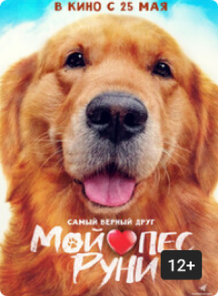

Мой пёс Руни (12+)
Режиссер: Ким Джу-хван
Комедия, Ю.Корея, 2023
Kinopoisk - 7.8
Мин-су собирается жениться, когда его невеста внезапно признаётся, что неё аллергия на собак. Теперь лучшему другу парня — золотистому ретриверу Руни — нужна новая семья. С помощью двоюродного брата и соцсетей Мин-су начинает искать новый дом для Руни.